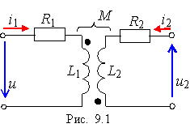
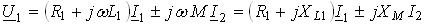
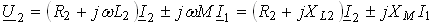
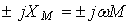
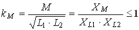

1. ОСНОВНЫЕ ПОЛОЖЕНИЯ
Индуктивная связь катушек обуславливается связью их магнитных потоков. Взаимно индуктивная связь проявляется в наведении ЭДС еМ2 (называемой ЭДС взаимоиндукции), например, в катушке L2 при изменении тока i1 в другой близкорасположенной катушке L1 (рис. 9.1). Цепи, в которых наводятся ЭДС взаимоиндукции, называют индуктивно связанными цепями.
На схеме рис. 9.1. обозначено: L1, R1 и L2, R2 – индуктивности и резистивные сопротивления первой и второй катушек; М – взаимная индуктивность в генри (Гн); точками обозначены однополярные зажимы пары индуктивно связанных катушек.

При этом соединение (включение) катушек называют согласным, если токи в них одновременно направлены от однополярных зажимов или к ним, что приводит к усилению общих магнитных потоков катушек за счёт потоков взаимоиндукции; при встречном включении катушек направление токов в них таково, что при их протекании общие магнитные потоки катушек ослабляются.
При составлении уравнений второго закона Кирхгофа для катушек ЭДС взаимоиндукции ;
, (9.1)
где - комплекс сопротивления взаимоиндукции; знак плюс (+М) ставят при согласном включении катушек; знак минус (-М) - при их встречном включении.
Степень индуктивной связи двух катушек определяют коэффициентом связи.
,
где XL1 и XL2 – индуктивные сопротивления катушек.